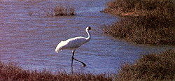

A nation's worst pipeline dreams come true.
After making a dramatic comeback, whooping cranes now face habitat loss in Texas.
S AYING "I TOLD YOU SO" ISN'T polite, but maybe being polite doesn't enjoy such a high priority right now.
Nearly 20 years ago, Friends of the Earth published a book titled Cry Crisis! Rehearsal in Alaska by Harvey Manning, a Seattle freelance writer. It was an impassioned plea that the proposed trans-Alaska pipeline be rerouted to follow the Alaska Highway through Canada and, ideally, that the oil be transported by rail rather than by pipe and tanker. The pipeline was delayed by several years as litigation proceeded. In the end, Vice President Spiro Agnew broke a tie vote in the Senate to approve the pipeline and its environmental impact statement and to bar further court challenges.
Cry Crisis! included worried ruminations about all manner of perils the pipeline would pose, both to the tundra and to wildlife (even if it operated as intended) and to all manner of resources if something should go wrong. It predicted pollution of the North Slope, which has occurred.It predicted leaks along the line itself, which also have occurred.
And it predicted catastrophe if there should be a serious mishap at the terminal at Valdez or in Prince William Sound. On March 24, that worst of nightmares came true when the Exxon Valdez ran aground.
Let's go ahead and say it: We told you so. There's not a great deal of satisfaction in that remark. But there is a renewed plea that warnings like these not go unheeded and ignored. People warned that nuclear power plants like those at Three Mile Island and Chernobyl could malfunction, causing terrible damage. At TMI we may have dodged the proverbial bullet; in the Ukraine and environs they weren't so lucky.
Environmentalists are telling Congress and the administration that exploring for oil and gas in the Arctic National Wildlife Refuge is not worth the risk, which has now been tragically demonstrated at the end of the pipeline that new Arctic petroleum would flow through. They're saying that drilling off both coasts of the United States is likewise too risky, the benefits too small. They're insisting that liquidating nearly all the oldg-rowth forests in the Pacific Northwest will lead to ecological calamity, including the extinction of the spotted owl and other species.
And yes-let's not shy away from the tough ones-they're saying that citizens of the United States and the rest of the world must swiftly and dramatically alter the way they live their lives. The automobile culture must give way to its successor. Energy conservation must become the first priority in any energy policy.
None of this will be easy, but the growing panoply of warnings-ozone hole, medical-wasted beaches, drought, fire, oil-soaked birds and otters-should shift considerable momentum to the side bent on survival.
"We told you so" doesn't revivify the hundreds of mammals and thousands of birds that have perished with Exxon's oil in their lungs and on their feathers. It may, with luck, forestall disasters now being sketched on drawing boards all over the world.
As if whooping cranes hadn't weathered enough adversity already, the big birds are now seeing the shore of their wintering ground on the Texas coast slowly retreat, a victim of erosion caused mostly by boat traffic on the Gulf Intra-coastal Waterway, which slices 12 miles through the Aransas National Wildlife Refuge.
Nearly extinct in the early 1940s, the whoopers have clawed their way back to the point where now about 200 exist, in three distinct flocks.
One is at the Patuxent Wildlife Research Center, where whooper eggs pilfered from the wild are hatched, and the young reared, by captive-bred sandhill cranes. A second sandhill-reared flock migrates between Grays Lake, Idaho, and the Bosque del Apache National Wildlife Refuge in New Mexico. The whoopers in this flock have yet to breed.
The main flock, numbering 131 by the latest count, spends its summers in the Yukon Territory and its winters at the Aransas National Wildlife Refuge in Texas, where the latest trouble has flared up.
A few years ago, biologists Johnny French and Pedro Ramirez of the Fish and Wildlife Service (FWS) in Corpus Christi noticed that the Intra-coastal seemed to be getting wider. They established that the refuge was being eaten away at an average rate of three feet per year. French wrote to the Corps of Engineers, which dredges the Intra-coastal every few years, demanding that the agency reinitiate consultation with the FWS under the Endangered Species Act, a procedure that could lead to new measures to protect the birds from losing their habitat to erosion.
The Corps refused French's request and another by Rogelio Perez, French's boss.
Then, last January, staff attorney Lori Potter of the Sierra Club Legal Defense Fund, writing on behalf of the National Audubon Society and the Coastal Bend Audubon Society, informed the Corps that it was violating the Endangered Species Act and that she would file suit unless the agency reinitiated consultation with Fish and Wildlife.
On March 17, Col. John Tudela of the Corps' Galveston office replied that the Corps had relented. A new biological assessment will be prepared, and consultation will be reinitiated if it seems warranted.
Final resolution of the problem almost certainly will rest with Congress. The ideal solution, according to FWS biologists, would be to move the Intracoastal out of the refuge altogether, which would be expensive. Another possibility is to stabilize the banks of the waterway with riprap or some kind of matting. Simply controlling the volume and speed of ship traffic might be enough to stop the erosion. Time will tell. The whoopers are too precious to gamble with.
For more information, write Sierra Club Legal Defense Fund, 2044 Fillmore St., San Francisco, CA 94115.
|
 After making a dramatic comeback, whooping cranes now face habitat loss in Texas |
|
|